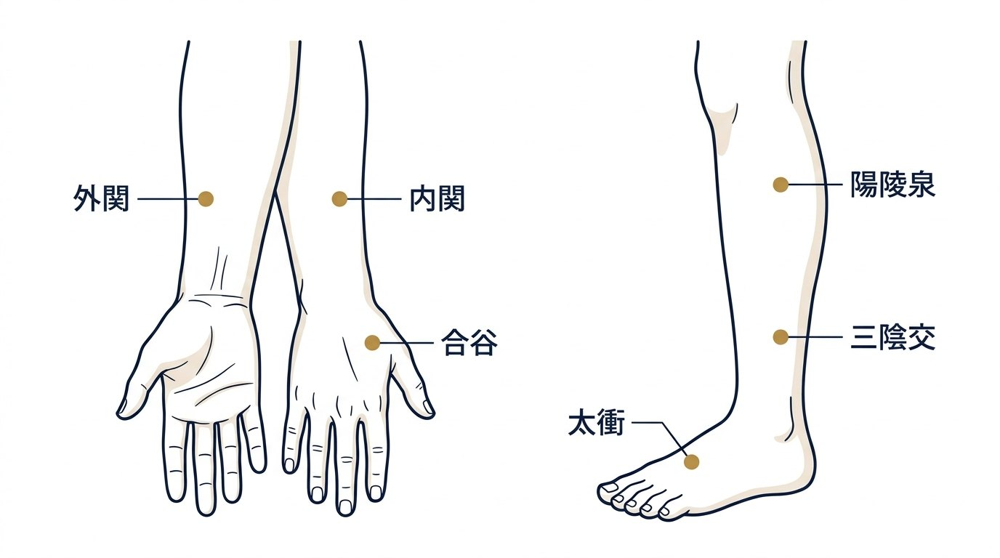

糖尿病神経障害の鍼灸
高血糖による末梢神経・血流障害で足先のしびれや痛みが起こります。血糖管理と足病変予防を最優先に、循環・自律神経を安全に補完ケアします。
まず知っておきたい要点と改善の流れ
糖尿病神経障害は、長期間の高血糖により神経を養う毛細血管の血流が低下し、糖化終産物の蓄積や酸化ストレスによって末梢神経や自律神経が傷つく糖尿病の代表的な合併症です。多発神経障害では足先から左右対称にしびれ・痛み・感覚鈍麻が進み、単神経障害では急な神経麻痺が起こることがあります。感覚低下により傷や潰瘍・感染に気づきにくくなるため、専門医での血糖管理と日々のフットケアが最優先です。（公式解説）
このようなお悩みはありませんか？
- ✓足裏で砂利を踏む・薄皮が張ったような違和感やしびれがある
- ✓手足の先端に刺すような痛みや焼けつく痛み、冷えを感じる
- ✓温度や傷の感覚が鈍くなり小さな傷や乾燥・ひび割れが心配
- ✓便秘・下痢・発汗異常・立ちくらみなど自律神経症状も出ている
当院の施術アプローチ・改善の流れ
なぜ鍼灸で改善へ向かうのか？（作用機序の図解）
糖尿病神経障害に対する鍼灸は、末梢神経の微小循環改善と中枢性感作の鎮静機序を通じて、お体本来の回復力を引き出します。

過敏な皮膚への過剰刺激を避けつつ、神経の走行に沿った安全な部位と遠位穴を刺激します。
神経を圧迫する周囲筋の過緊張を緩め、神経線維の修復に必要な酸素と血流環境を整えます。
微細な刺激で過敏化した痛み伝達回路を鎮静し、ピリピリ感や放散痛の波を和らげます。
睡眠不足や自律神経の緊張も同時に整え、しびれ・神経痛による生活支障度を軽減します。
院長YouTube解説・関連動画
CRPS・末梢神経障害の遠隔・健側アプローチツボ図解
実際の施術ではお一人おひとりの体質・症状に合わせて選穴しますが、複合性局所疼痛症候群（CRPS）・神経障害性疼痛の安全な遠隔ケアの臨床でよく用いられる代表的なツボの目安です。

📌 代表的なツボの詳細一覧表を開く（6穴） ▼
| ツボ名 | 位置の目安 | 主な狙い | セルフケアの注意点 |
|---|---|---|---|
| 外関（がいかん） | 手の甲側、手首から指3本分肘寄り | 上肢の神経過敏・放散痛の遠隔調整 | アロディニア（接触痛）がある患側は避け健側を使います。 |
| 内関（ないかん） | 手のひら側、手首から指3本分肘寄り | 交感神経依存性の痛み・不安感の鎮静 | 強く押し込まず軽く添える程度にします。 |
| 合谷（ごうこく） | 手の甲、親指と人差し指の間 | 中枢性の下行性疼痛抑制系の活性化 | 健側への穏やかな刺激で全体の痛みを和らげます。 |
| 陽陵泉（ようりょうせん） | 膝の外側下、丸い骨の斜め下のくぼみ | 下肢の神経周囲の筋緊張・しびれ感の緩和 | 電撃痛が出ない優しい圧に留めます。 |
| 三陰交（さんいんこう） | 内くるぶしの上から指4本分上 | 末梢の微小循環改善・夜間痛による不眠ケア | 温めと併用すると末梢血流が整いやすくなります。 |
| 太衝（たいしょう） | 足の甲、親指と人差し指の骨の間 | 自律神経の過緊張・足先のピリピリ感調整 | 皮膚感覚が過敏な場合は触れずに遠隔穴を選びます。 |
国際査読論文の科学的エビデンス
国際的な医学データベース（PubMed・Cochrane等）で報告されている複合性局所疼痛症候群（CRPS）・神経障害性疼痛の安全な遠隔ケア領域の代表的な査読済み鍼灸研究をまとめています（標準治療との併用や研究上の限界を含めて正確に掲載）。
📚 査読論文データ・PubMed出典リンクを開く（4件） ▼
| 年・研究デザイン | 対象・規模 | 主な結果 | 限界・出典 |
|---|---|---|---|
| 2024年 メタ解析 | 化学療法誘発性末梢神経障害（CIPN）21研究（n=2,121） | 疼痛強度（SMD -0.66, p=0.002）、QOL（p=0.01）、正中神経MCV・脛骨/腓腹神経SCVが有意改善。 | 介入・対照設定に臨床的異質性あり。 Front Neurol (PMID: 39555482) |
| 2019年 メタ解析 | 帯状疱疹後神経痛（PHN）系統的レビュー | 疼痛強度を有意に軽減（SMD -1.78, GRADE中等度）、不安・QOLも改善。 | 小規模研究が多く大規模高品質RCTでの追試が必要。 J Pain Res (PMID: 31410050) |
| 2018年 Cochraneレビュー | 手根管症候群 12試験（n=869） | シャム・装具併用比較では明確な差なし（低確実性）。重篤な有害事象なし。 | 全試験でバイアスリスク懸念（薬物・装具等の補完）。 Cochrane (PMID: 30521680) |
| 2023年 メタ解析 | 神経障害性疼痛全般 8 RCTs統合（n=338） | 全体解析で疼痛強度を有意改善（SMD -0.59, P=0.001）、シャム比較も優位（P=0.01）。 | GRADE確実性は非常に低く薬物療法の補助として解釈。 Front Neurol (PMID: 36698895) |
参考文献・出典
- 銀座そうぜん鍼灸院「糖尿病神経障害の公式解説ページ」
- 2024年 メタ解析（化学療法誘発性末梢神経障害（CIPN）21研究（n=2,121））— Front Neurol (PMID: 39555482)
- 2019年 メタ解析（帯状疱疹後神経痛（PHN）系統的レビュー）— J Pain Res (PMID: 31410050)
- 2018年 Cochraneレビュー（手根管症候群 12試験（n=869））— Cochrane (PMID: 30521680)
- 2023年 メタ解析（神経障害性疼痛全般 8 RCTs統合（n=338））— Front Neurol (PMID: 36698895)
よくある質問（FAQ）
Q. 足の感覚が鈍いのですが、お灸で火傷しないか心配です。▼
Q. 鍼灸だけで血糖値や神経障害を治せますか？▼
あわせて読まれる関連疾患（神経のお悩み）
帯状疱疹の皮膚症状治癒後も3か月以上続く神経痛（PHN）です。医療機関の治療と併用し、血流・自律神経・生活の工夫で痛みの軽減を支えます。
顔面神経への血管圧迫などで顔の片側が無意識に痙攣する疾患です。専門医の診断を前提に、筋緊張緩和・自律神経調整・ツボケアで支えます。
手足の動脈が炎症・血栓で詰まる指定難病（閉塞性血栓血管炎）です。専門医の診療と完全禁煙を最優先に、安定期の血流と自律神経を支えます。
けがや手術後に損傷の程度を超える激しい痛みと自律神経症状が続く疾患（CRPS）です。専門医の治療・リハビリと並行し、低刺激で補完ケアします。
両足にゆっくりとつっぱり（痙縮）と筋力低下が進む指定難病（HSP）です。専門医の診療・リハビリを最優先に、安定期の筋緊張を穏やかにケアします。
神経の損傷や機能異常で起こる慢性の強い痛みです。医療機関での原因治療と並行し、深層筋・自律神経・ツボケアで痛みの悪循環を和らげます。
おひとりで悩まず、まずはご相談ください
銀座本院・川口・大宮・横浜・博多・田無の各院でご予約を承っております。